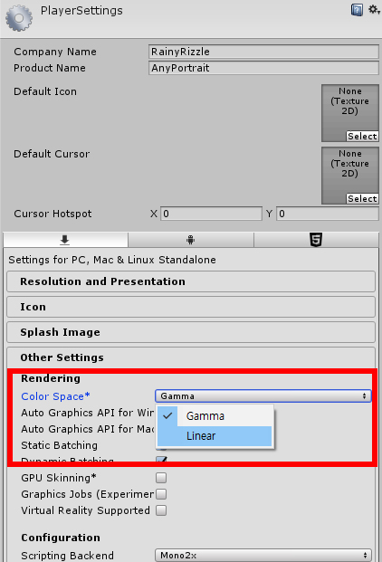
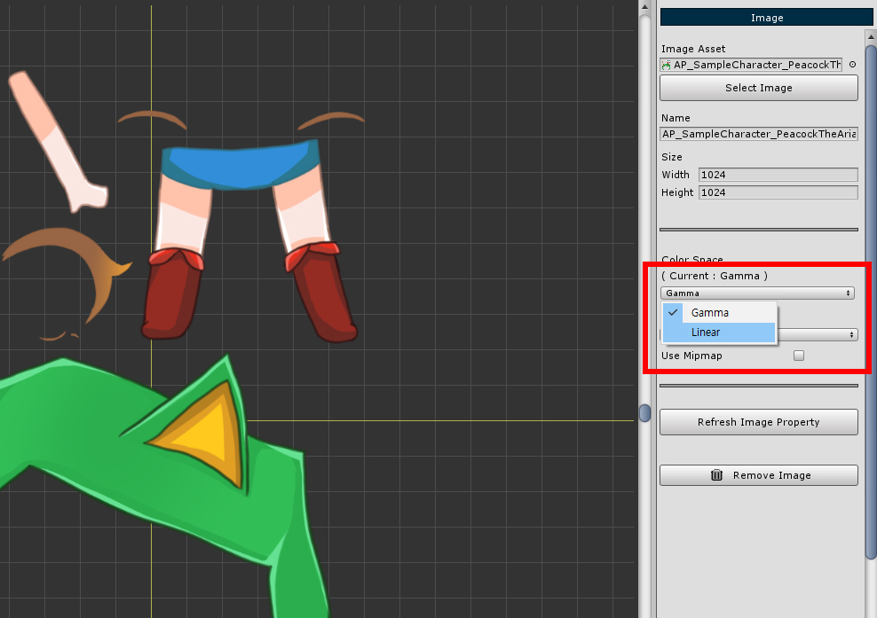

AnyPortrait > Manual > Linear Color Space and Asset Settings
Linear Color Space and Asset Settings
1.0.1

You can change the image's asset settings in AnyPortrait.
1. Color Space : Change the color space setting of the image according to the rendering settings of the project. Gamma or Linear can be selected.
2. Compression : The image compression method can be set. Three levels of compression and non-compression are provided.
3. Use Mipmap : Set whether or not to apply mipmap.
1. Changing the Color Space

You can change the color space of your project in Player Settings.
More information on Color Space can be found on the related page.

Depending on the Color Space, the rendering results are different.
Therefore, you must change the setting to match the project's Color Space.

Change the Color Space of all images.

In the Bake dialog, select Color Space.
2. Changing the image compression method

You can change the compression method of the image.
In most cases, it is recommended that you compress and use the image,
when an image is targeted to a 2D character, you may need a high quality image that is obtained in an uncompressed method.
Because it is a 2D game, mipmaps may not be needed.
It is recommended to turn off the mipmap.